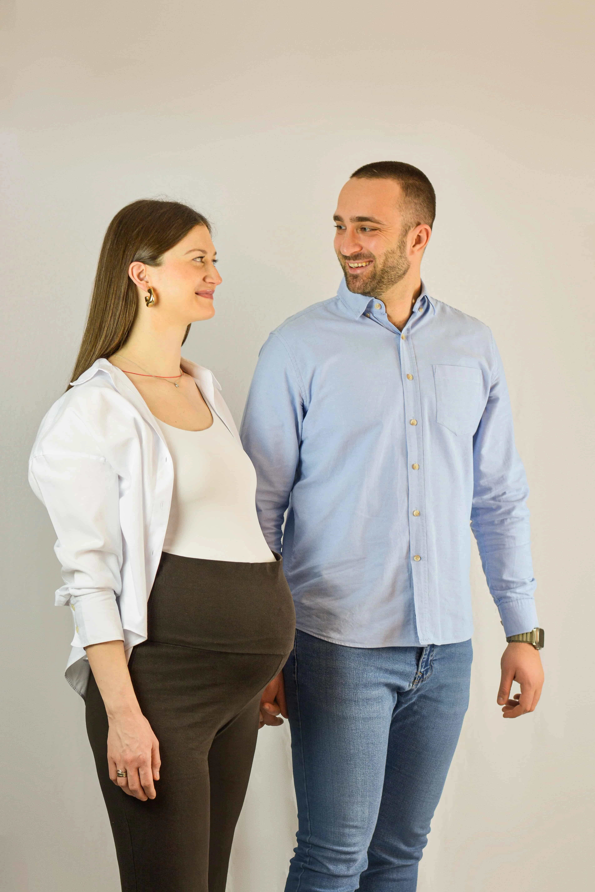

Trudnoća je jedno od najlepših i najemocionalnijih poglavlja u životu jedne žene. Te mesece punog iščekivanja, radosti i uzbuđenja vredi ovečiti zauvek. Ali pitanje koje svaka buduća mama postavi je: „Kada da zakažem trudničko fotografisanje?"
Odgovor nije komplikovan, ali je važan. Pravi tajming znači razliku između fotografija koje ćete obožavati i onih za koje ćete misliti „trebalo je ranije" ili „trebalo je kasnije".
Idealan period: 28-36 nedelja
Zlatno pravilo trudničke fotografije je između 28. i 36. nedelje trudnoće. Evo zašto je baš ovaj period savršen:
- Stomak je lepo zaobljen i vidljiv na fotografijama
- Buduća mama se još uvek oseća dovoljno udobno za poziranje
- Manja je šansa za nepredviđeni raniji porođaj
- Koža obično izgleda sjajno i zdro
- Energija je još na dobrom nivou

Nedelja po nedelja - šta očekivati
„Većini mojih klijentkinja kažem - zakažite sesiju za 30-32. nedelju. To je tačka gde se sve poklopi: stomak, energija, udobnost i taj poseban sjaj koji trudnice imaju."
Kako se pripremiti
Kada jednom odaberete termin, evo šta treba da uradite da bi session bio savršen:
Studio ili priroda?
Oba pristupa imaju svoje prednosti:
Studio nudi kontrolisano svetlo, razne pozadine i privatnost. Idealan je za umetničke, minimalistične fotografije sa naglaskom na stomak i siluetu. Savršen za zimu ili kišne dane.
Priroda donosi mekoću, toplo svetlo i romantičnu atmosferu. Park, livada ili obala reke su prelepe lokacije. Najbolje za proleće i leto, posebno tokom golden houra.
Možemo i kombinovati - započeti u studiju sa umetničkim kadrovima, pa preći u prirodu za romantičnije fotografije. Sve zavisi od vaših želja.
Da li partner treba da bude tu?
Ne mora, ali toplo preporučujem. Fotografije na kojima partner drži stomak, grli vas ili se smeje sa vama su neke od najemocionalnijih slika koje ćete ikada imati. A ako imate starije dete, uključite i njega - dečja radost i iščekivanje su neprocenjivi.
Naravno, solo fotografije su jednako prelepe. Trudničke fotografije slave vas i vašu snagu, i zasijate na njima bez obzira da li ste same ili sa porodicom.